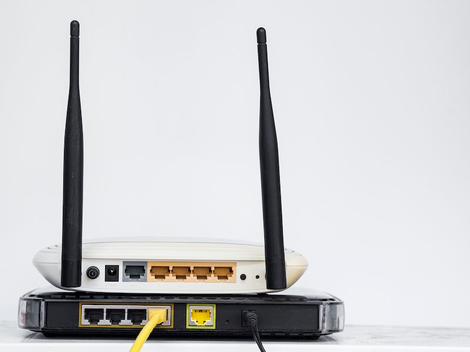
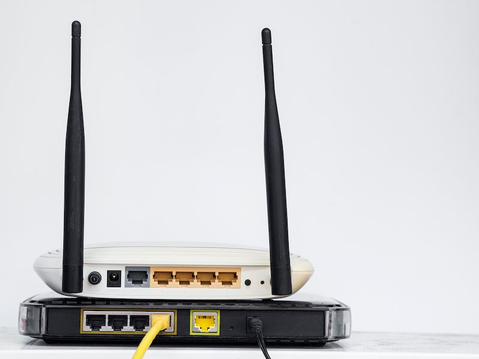

Indhold
Dette forløb indeholder en kort præsentation og gennemgang af enkelte værktøjer i aircrack-ng suit og hvordan disse benyttes til at fange og knække en nøgle til et Access Point (router).
Dette forløb indeholder en kort præsentation og gennemgang af enkelte værktøjer i aircrack-ng suit og hvordan disse benyttes til at fange og knække en nøgle til et Access Point (router).
Kernen af WPA(2) (Wi-Fi Protected Access) sikkerhedsprotokollen for trådløs internet er "the 4 way handshake" - som groft oversat betyder "det 4-vejs håndtrykket".
De fleste WiFi netværk i private hjem bruge WPA(2), hvor WPE (Wired Equivalent Privacy) tidligere blev brugt. Ved 4-vejs håndtrykket kan en klient og en router erkende overfor hinanden, at de kender "nøglen" uden egentlig at opgive en decideret nøgle.
Nøglen til WPA bliver udledet af både ESSID (navnet på netværket) og kodeordet til netværket. Dette gør det svære at gennemføre et standard "dictionary attack" - for hver password, vil nøglen stadig varierer for hver access point.
For først at opfange den nødvendige data (4 way handshake) kan bruge en samling programmer, som samlet kaldes for "Aircrack-ng suit", til at analysere og angribe et netværk. Man skal dog bruge et WiFi NIC (Network Interface Controller) der kan sættes i "moitor mode" - normalt vil ens netværk interface controller være i det der hedder "managed mode".
På Linux kan vi benytte iwconfig eller airmon-ng til at se status og navn for tilgængelige trådløse netværk interfaces.
iwconfig
🚧
Det er vigtigt at fortælle, at dette angreb ikke er lovligt at udføre såfremt man ikke har tilladelse fra ejeren af netværket eller selv ejer netværket.
Derfor forslår jeg, at man deler et netværk gennem et hotspot på sin mobil/tablet. Det kan ligeledes være en idé, at vælge et nemt password, så man ikke skal vente i timevis for at knække nøglen.
Ud fra outputtet fra iwconfig kan vi se, at jeg har to wireless interface; wlan0 og wlan1
📌
Vær opmærksom på at jeres interface sagtens kan hedde noget andet, da det afhænger af hvilken Linux variant I benytter - jeg benytter Kali Linux.
Vi kan starte med at genere vores egen ordliste. Dette kan vi gøre ud fra rockyou.txt ordlisten.
or at genere 5 tilfældige passwords fra rockyou, kan vi bruge denne Linux kommando
head /usr/share/wordlists/rockyou.txt -n 10000 | shuf -n 5 - > mywordlist.txt
Da WPA2 kræver mindst 8 tegn, tilføjer jeg også det password, som jeg benytter til mit delte netværk. Dette kan evt. gøres ved denne kommando
echo -n "password1234" >> mywordlist.txt
Vi har nu en ordliste klar til brug (mywordlist.txt). Nu skal vi sætte vores NIC i "monitor mode" for at fange "the 4 way handshake".
Brug airmon-ng check kill kommandoen til at "dræbe" tjenester der evt. kan forsøge at sætte vores netværks interface i "managed mode" igen.
sudo airmon-ng check kill
Sæt efterfølgende vores netværks interface i "monitor mode"
sudo airmon-ng start wlan1l
Vi kan nu begynde at fange date til at gennemføre vores attack. Mit delte netværk hedder AndroidAP2, som er det netværk jeg vil angribe
sudo airodump-ng wlan1mon
Lig mærke til BSSID og CH på den enhed vi vil angribe.
Tryk ctrl-c for at afbryde angrebet. Kopier BSSID for vores AP
Vi vil nu lave et specefikt angreb på vores AP (AndropdAP2). Når en anden enhed kobler sig på AndroidAP2, kan vi fange "the 4 way handshake" og vi kan derefter knække nøglen. Reelt kan vi også "smide" en enhed af netværket, men det vælger jeg ikke at vise jer - DNS attack.
sudo airodump-ng wlan1mon --bssid F2:C9:B0:E7:81:BB --chanel 6 -w AndroidAP2
VI har nu fanget vores handshake (AndroidAP2.cap) og kan stoppe vores program ctrl+c.
Til sidst, stop airmon-ng ved at skrive kommandoen
sudo airmon-ng stop wlan1mon
service NetworkManager start
service wpa_supplicant start
Nu hvor vi har det vi skal bruge for at kunne knække nøglen til vores WiFi, kan vi se om vi kan knække den ved at benytte vores ordliste.
sudo aircrack-ng -b A2:C9:A0:E7:11:BB -w mywordlist.txt AndroidAP2-2.cap
Vi har nu knækket nøglen og har fundet vores WiFi password (password1234)
Med aircrack-ng -j kan vi generere en HCCAPX fil, som kan brute forces af hashcat.
aircrack-ng AndroidAP2-2.capNinjaJc01-01.cap -j hashcat_output
Denne fil kan vi også anvende med John the Ripper.
Først skal vi dog genere et john-readable hash. Dette kan vi gøre med hccapx2john.py til.
(hccapx2john.py findesi jumbo udgaven af John the Ripper)
hccapx2john.py hashcat_output.hccapx > hash.txt
Knæk nu hashet med john:
john --format=wpapsk --wordlist=/usr/share/wordlists/rockyou.txt hash.txt